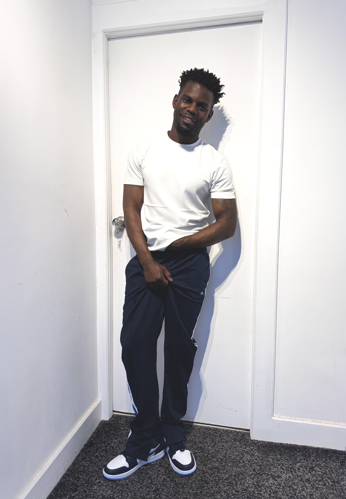

The Artist
Good Ereseh creates hyperrealistic charcoal and graphite artworks that explore identity, emotion and the stories held within human expression.

My Approach
Every artwork begins with observation. Through charcoal and graphite, I study light, texture and expression to create portraits that capture more than physical appearance.
My work focuses on the connection between artist and subject. Each mark is carefully placed to preserve character, emotion and individuality.
The goal is not only realism, but creating artwork that allows viewers to feel a connection with the person represented.
Medium and Process
I work primarily with charcoal and graphite pencil on archival paper, building each artwork through layers of tone, texture and detail.
Large-scale drawings can take many hours to complete, with careful attention given to skin texture, facial structure, contrast and atmosphere.
Identity
Exploring the stories, backgrounds and experiences that shape people.
Emotion
Capturing expressions and moments that communicate feeling beyond words.
Craftsmanship
Creating handmade artworks through patience, precision and traditional techniques.
Based in London
Good Ereseh is a London-based artist creating original artworks and limited edition fine art prints for collectors who appreciate traditional handmade techniques.
View Collection